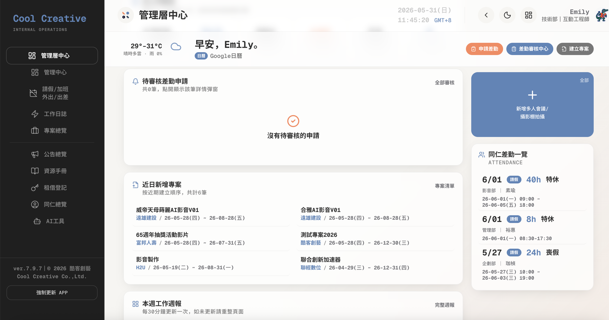

B2B ERP Experience Redesign企業 B2B ERP 系統體驗重構
Restructuring a feature-driven, database-dumped ERP into a scenario-driven employee admin tool with built-in safeguards, eliminating operational friction for staff, and keeping the data leadership depends on from being distorted at the source. 將「功能導向、資料庫平鋪」的ERP，重構為「場景導向、流暢防呆」的員工行政工具，消滅員工的操作阻力，也讓管理層賴以決策的數據不再失真。

The Overview專案基本資訊
The original system indiscriminately flattened every back-end database field onto the front end, maxing out staff's cognitive load and triggering grassroots pushback. Through think-aloud testing and mental-model deconstruction, I fully restructured four core modules : management hub, attendance, work logs, and project overview, converting "database thinking" into "scenario-driven workflow", reducing administrative resistance at the ground level while helping leadership accurately capture the true costs of headcount and project delivery. 既有系統將後台資料庫欄位毫無節制地直接平鋪至前台，導致員工操作認知負荷破表。我透過放聲思考測試與心智模型解構，針對管理中心、差勤、工作日誌與專案總覽四大核心模組進行全面重組，將「資料庫思維」轉化為「場景工作流」，降低基層行政反彈的同時，協助管理層精準收攏人事與專案真實成本
Context & the core problem背景與核心挑戰
Business context商業背景
The ultimate goal of enterprise digital transformation is to go paperless through data — accurately capturing project time spent, available headcount capacity, and project net margin. But when the integrity of that data depends entirely on extremely low reporting friction, a feature-first system that fights users at every step triggers grassroots resistance. Fixing this ERP wasn't about prettying up the interface; it was about re-earning staff trust and ensuring leadership's decision data stays uncorrupted at the source.企業數位轉型的終極目地，是透過數據落實去紙本化，精準捕捉「專案耗時、人員可用產能與專案淨利」的真實全貌。然而，當數據的真實性必須建立在「極低的填報阻力」時，現行功能導向的系統卻引發了基層行政反抗。優化此 ERP，本質上不是美化介面，而是重新贏回員工信任、確保管理決策數據不再失真。
4 pain points from testing測試歸納的4大痛點
The portal was a junk drawer門戶「雜貨店化」
The management hub had no "home" anchor, and overdue-task cards were dead ends you couldn't act on — violating the user's instinct to clear an anomaly.管理中心缺乏「首頁」定錨，逾期任務卡片都是無法操作的「死路」，違反用戶想消滅異常的心理。
Attendance fought the mental model差勤與心智模型錯亂
"Leave" (time off) and "overtime" (extra work) — two opposite intents — were packed into one centre, with no visual safeguards or warnings for irreversible actions, triggering extreme anxiety around routine submissions.本質相反的「請假」與「加班」被打包進差勤中心，且缺乏視覺防呆與不可逆操作警示，引發員工極高的填報焦慮。
Time tracking was fragmented時間心智錯位
"Tasks" (looking forward) and "hours" (recording the past) were tangled across tabs; the timeline board was dead cells with no affordance, so reporting friction was brutal.混淆了「待辦任務（未來）」與「回報進度（過去）」的分頁邏輯；時間軸看板像死格子、缺乏可見性，填報阻力極高。
Decision outsourcing & view explosion決策外包與視圖爆炸
Project overview shipped 11+ layouts (4 outer + 5 inner views). The classic tell of "decision outsourcing" — engineering couldn't decide what was best, so it dumped the cognitive cost on users.專案總覽竟提供了 11+ 套複雜視圖（外層 4、內層 5），研發無法決定何者最優，便把認知成本轉嫁給使用者。
Success metrics成功指標
Conversion: shift from feature-driven to scenario-driven.轉化指標：將底層邏輯從「功能/資料庫導向」扭轉為「使用者場景導向」。
Efficiency: key time-logging in under 5 seconds; new-project creation from a 2.5-min failure down to under 30 seconds.效率指標：進度回報能在 5 秒內完成；建立新專案從 2.5 分鐘降至 30 秒內。
Hygiene: clear error-prevention mechanisms to eliminate the emotional anxiety staff feel around sensitive tasks — pay deductions, leave requests, and anything irreversible.保健指標：明確的防呆機制預防操作差錯，消除員工在面對扣錢、請假等敏感庶務時的情緒焦慮。
Discovery & scope convergence先收斂後優化
Brought in late onto a system engineering had already shipped. My constraint was clear: maximize user value without asking for a rewrite作為「後期介入」的設計師，面對一個工程團隊已開發完成的企業系統，我採取「低工程成本、高用戶價值」的優化策略
Engineering had already shipped 11+ parallel UIs, leaving the product buried in dead weight — a low-use "My Memos" tab, confusing academic WBS jargon, and more. Rather than demanding a rewrite, I scoped by a single principle: optimize without rewriting. I mapped the system evolution into two phases: short-term convergence now, mid-to-long-term AI enablement later.工程團隊已完成 11+ 套並行 UI，產品堆疊了過多無效資訊（像是低使用率的「我的備忘」、令人困惑的 WBS 學術術語）。我並非要求重寫，而是以「不重寫也能優化」的核心制定範疇。以「短期收斂、中長期 AI 賦能」勾勒系統演進天花板，將產品的生命週期規劃為兩個階段。
- mergeMerge overlapping tabs (My Tasks + Work Log into one) and remove dead tabs ("My Memos")合併高度重疊的分頁（我的任務 + 工作日誌合一）、刪除無效分頁（我的備忘）
- deleteSplit the attendance entry by intent: request leave, apply for overtime, business trip, external travel差勤入口導入分流（我要休假、申請加班、出差登記、外出登記）
- filter_alt"4-into-1, 5-into-2": collapse views with icon-based grouping, label categories by information type — decluttering the interface while preserving different users' preferred views「四合一、五合二」以圖示收斂視圖、以資訊命名分類，釋放操作介面的同時，保留不同使用者習慣的視圖
- table_rowsStaff and managers no longer navigate tables and buttons — they chat directly with a built-in AI assistant to complete reporting tasks that are inherently anti-human to do manually.員工與主管不再需要在一堆表格和按鈕中尋路。只需透過與系統內部 AI 直接打字對話，即可在聊天中完成反人性的填報庶務。
- unfold_lessThe system detects mouse-hover patterns and eye movement; AI proactively anticipates cognitive friction and automatically surfaces the specific information the user most needs at that moment.透過系統偵測使用者的滑鼠滑過軌跡甚至眼部動態，由 AI 主動預判使用者當下的認知卡頓，介面便會自動吐出使用者此時此刻最想看到的特定資訊。
- psychologyManagement no longer pulls reports manually — just ask the AI assistant, and it autonomously aggregates and analyzes data across pages.管理層不再需要手動拉表。只需對著 AI 助理提問，AI 將自發性跨頁面進行資料彙整與分析。
Human-centered insight人性洞察
On a late-stage redesign, the hardest stakeholder isn't the user — it's the original engineer在後期介入的優化案，最大的阻力往往不是用戶，而是原始開發者
The whole system was built by engineers, alone, with real effort. Walking in with a UX report listing dozens of flaws easily triggers defensiveness and avoidance.整個系統是工程師耗費心血獨立寫完的。若帶著一份列了數十項缺失的 UX 報告進場，極易引發工程師的自我防衛與逃避心理。
So I reframed it as fighting on the same side: I let users' own words — not "I think" — carry the persuasion, then translated every ask into engineering language: "fewer redundant code paths" (cut the views), "remove dead-weight components" (merge the tabs). The redesign became about reducing the engineer's burden, not critiquing their work.於是我採取「共同作戰」的溝通模式：避免「我認為介面不好看」論述，改用使用者的痛點原話作為最高說服力。並轉換溝通語言，像是「減少程式碼冗餘（砍掉視圖）」，重構被定義為「幫工程師減負、拿掉垃圾組件」而非一份批判。
Deliverables & learnings專案產出與反思
What I delivered最終交付物
A complete usability report across all four core modules, paired with a full-system restructuring proposal, now in engineering implementation validation.四大模組的完整易用性報告，搭配全局重構提案，現正與工程落地驗證。
Reflection & next steps反思與未來展望
This taught me that a B2B internal system exists to support decisions and speed collaboration — not to stack dead data behind pretty layouts. Filling in progress is inherently anti-human admin; leave and overtime are opposite mental circuits. Testing showed me the deeper humanity in the work.這個專案讓我體會到，B2B 內部系統的本質是「輔助決策、加速協作」，而不是用精美排版堆疊無效資料。填寫進度本質上是反人性的行政庶務，加班與請假在心智上是完全相反的迴路。透過測試，我看見更深的人性。
My ultimate vision for this ERP is Zero UI. Given sufficient resources, the next phase isn't polishing Figma — it's introducing an AI agent: leadership queries real project status and margin by voice or keyword, and the agent auto-captures collaboration traces so work logs need no manual entry.我對這個 ERP 最終極的想像是邁向「無介面」。若資源充足，下一階段不再是優化 Figma 介面，而是引入 AI Agent：管理層用語音或關鍵字直接查詢真實專案狀況，並由 AI 自動捕捉協作軌跡，實現免手動填報的工作日誌。
Making the technology invisible — freeing staff from the admin burden — is the ultimate commercial value of an ERP.用技術隱形的方式，徹底釋放員工的行政工作，才是 ERP 系統的終極商業價值。